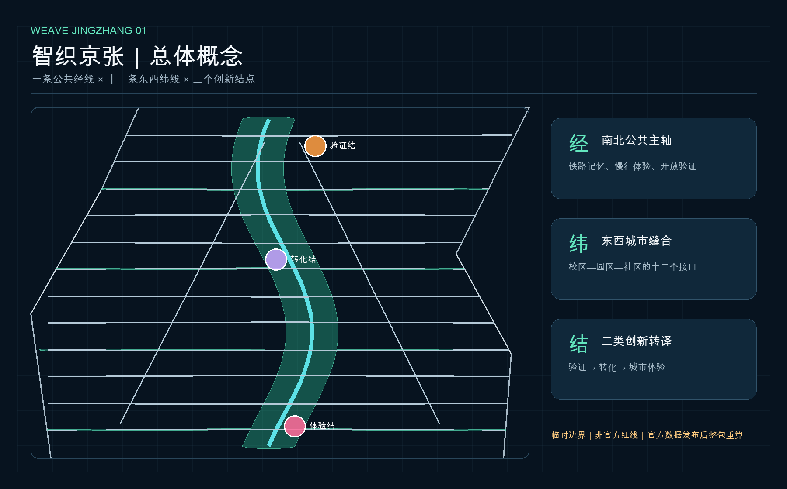
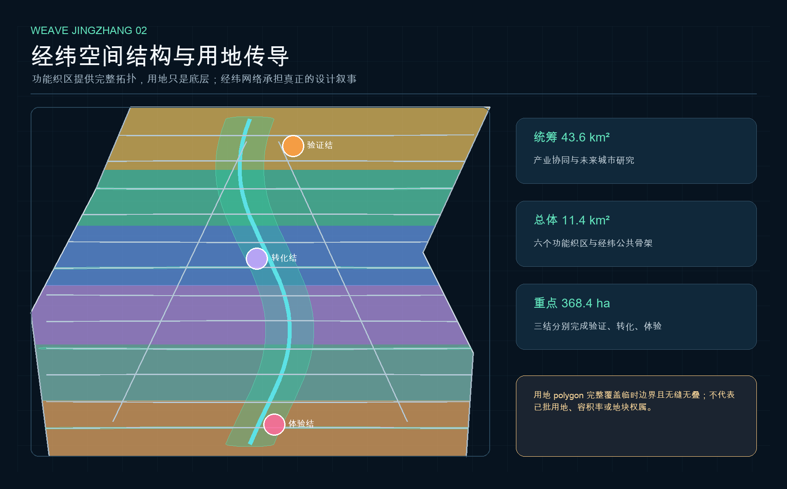
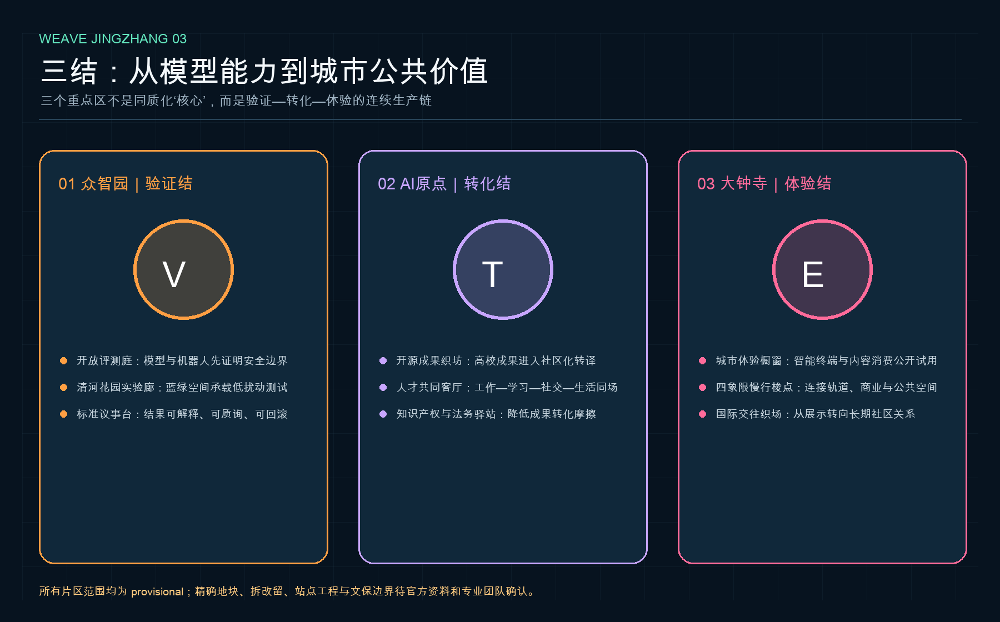
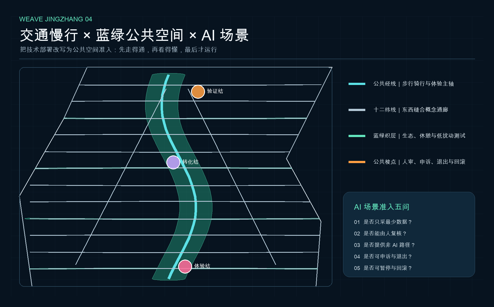
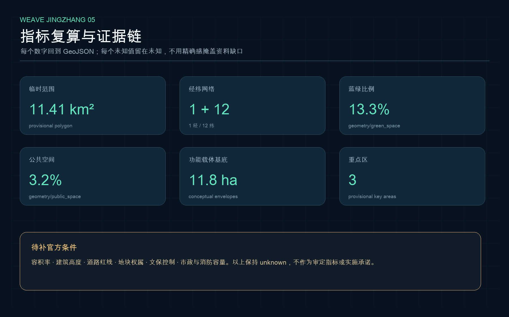

总览地图

经
南北公共主轴：文化、慢行、开放验证。
纬
十二个东西缝合接口：校区、园区、社区。
结
验证、转化、体验三类创新结点。
三层范围与用地分区

统筹研究 43.6 km²、总体设计约 11.4 km²、重点区域约 368.4 ha。六个功能织区完整覆盖临时提交边界，但不构成已批用地或控规调整。
重点区域

众智园｜验证结
模型与机器人先证明安全、解释和回滚能力。
AI 原点｜转化结
高校成果通过开源、法务、社区与人才服务进入城市。
大钟寺｜体验结
智能终端、内容消费和国际交往进入可选择的日常体验。
交通慢行与蓝绿公共空间

一条经线和十二条纬线均为概念性慢行关系；道路红线、轨道站点、文保与市政条件仍待专业复核。
建筑与更新项目
织坊功能载体
building 图层只表达研发、孵化、文化、社区服务的空间颗粒度，不是现状测绘或拆改留结论。
轻量优先
先做导视、活动、公开评测与公共梭点，再讨论需要权属、控规和工程审批的空间更新。
三期依赖
近期治理试验、中期空间缝合、远期官方数据重算与整带运营。
AI 场景
| 场景 | 空间 | 公共治理条件 |
|---|---|---|
| 公开评测庭 | 众智园 | 人工放行、红队测试、公开结果 |
| 开源成果织坊 | AI 原点 | 许可、署名、知识产权与退出机制 |
| 城市体验橱窗 | 大钟寺 | 非 AI 替代路径、可申诉、可回滚 |
| 慢行守护梭 | 十二纬线 | 最少数据、边缘处理、聚合统计 |
核心指标

11.41 km²
临时提交边界面积
13.3%
概念绿地并集比例
3.2%
概念公共空间并集比例
任务覆盖
公告 1.3、1.4、1.5 与 agent.1—agent.6 共 23 项均映射到正文、GeoJSON、指标、A3/A0、HTML、来源、假设和自检。
自检状态
本页随同 self_check.json 更新；最终状态以机器自检与维护者评审为准。
来源与假设
来源：官方公告、清权 Agent 任务书、住建部城市设计/控规文件、自然资源部用地分类、仓库 provisional boundary，以及 6 个官方/机构案例页面。
假设：官方红线、重点区 polygon、控规、道路、建筑、权属、文保、市政与公共服务底数尚缺。缺失值保持 unknown。